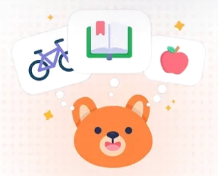
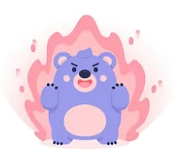
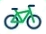
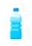

9:41

Hello, How
can I help you?
Your little buddy for better
and a happier you
Habit Tips
Set-up goals
Schedule
Ask anything ...
9:41
Let’s start small!
Hey, Lukman
Ready for a good day?
Water3Glass
Sleep8.5Hours
ExerciseBike18.6 Km
Today’s progress
2 habits leftNext: Move 20 mins
Today’s Habits
Drink WaterEvery 30 minutes
WorkoutFor 30 minutes
Write JournalEnd of the day
9:41
My Habits Tracker

4 Days Streak
Rise and Good
SunMonTueWedThuFriSat
202122
4 / 6 Habits completed today
Sleep time

Workout time
3 Hours Today

Drink WaterPoor
3/8
Workout
6/8